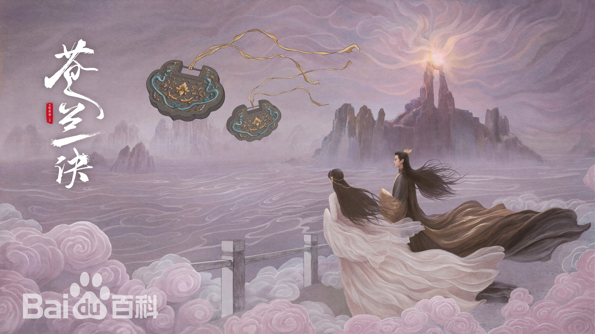

剧照详情
- 
剧情简介
《苍兰诀》是由伊峥执导，虞书欣、王鹤棣领衔主演，徐海乔、郭晓婷特别出演，张凌赫、林柏叡特邀主演，洪潇、 张宸逍主演，李一桐、陈若轩友情出演的古装爱情仙侠剧。
息兰一族被人灭族，受到举族保护的息山神女被封印为一颗兰草种子飘入尘世，万年后重生成天界低阶仙女小兰花，无意间复活了被困于昊天塔的月尊东方青苍。因为小兰花无意间对其施加的同心咒，东方青苍不得不保护小兰花，在此过程中，早已断情绝爱的东方青苍却爱上了温顺可爱的小兰花。
三万年前，月族首领东方青苍四处征战，唯一能净化他罪恶的息山神女息芸受到举族保护，被封印为一颗兰草种子，飘入尘世。而东方青苍被诸天神齐力斩杀，元神被打散封印在昊天塔。三万年后，水云天的小神仙小兰花一人在司命殿孤零零地整理命簿，她准备参加仙试，进入涌泉宫侍奉仰慕已久的长珩仙君。就在她赶去见凯旋而归的长珩的小路上，小兰花偶遇了长珩。她向长珩表达了多年前还是一颗小兰花时被长珩相救的恩情，没想到长珩根本不记得了。还好长珩取走了她送的一枝兰花，并将掉落的奇幻流萤石送给了她。长珩问兄长云中君急召的原因，原来昊天塔内月尊东方青苍的气息日日冲击，需要长珩回来与众仙一起加固封印。而小兰花回去后发现长珩的命簿发生变化，看到他今晚形神俱灭的危险，不顾众花草阻拦，偷偷飞去救他。来到昊天塔，看到东方青苍的气息正挟住长珩，小兰花用尽灵力攻击东方青苍的气息，被吸缠在气息与长珩之间。眼看封印要破裂，云中君当即打断长珩和小兰花的光链，众人重新封印东方青苍的元神，小兰花却被气息卷入塔中。